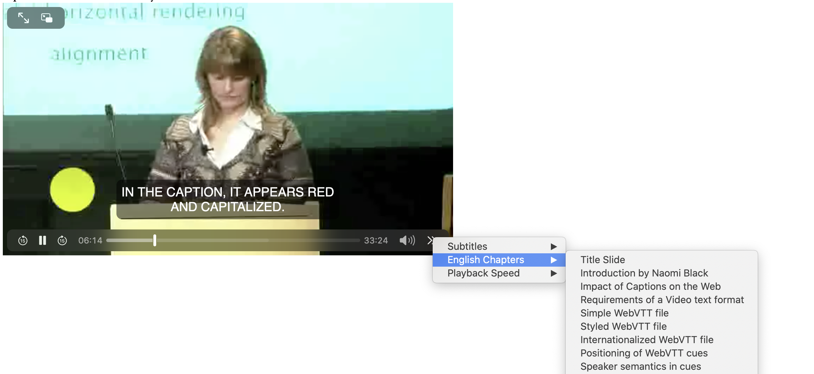

hotlinking mp3
Tantek explains POSSE:
The above was a hotlink directly to the url I found in the podcast page, which presumably tells the host that it was played somehow; this one is to a simpler URL to the same podcsst found via huffduffer:
Presentation will depend on the browser you are using. There may be a way to give a more detailed view by using a video tag and defining a chapter track with WEBVTT, but I haven't experimented with that recently.
Based on this example, here's the default rendering of a video with captions and a chapter trck. Only Safari shows the chapters, and in a hidden way. Chrome and firefox don't reveal them
How safari shows the chapters 